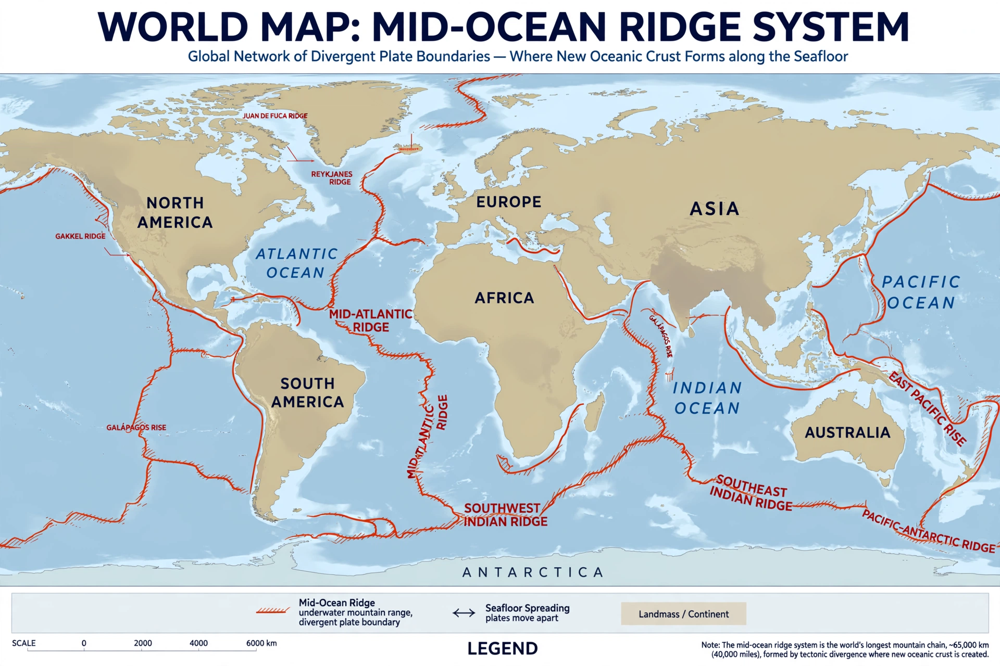

Mid-ocean ridge

A mid-ocean ridge is an underwater mountain system formed where tectonic plates pull apart, allowing magma to rise and create new oceanic crust. The ridge system is the longest mountain range on Earth, winding some 65,000 kilometres through every ocean, though it lies mostly 2,000–3,000 metres beneath the surface. See Plate tectonics.
Iceland is a rare place where a mid-ocean ridge — the Mid-Atlantic Ridge — rises above sea level, so the spreading process can be studied on land.
Spreading
At the ridge crest a narrow rift valley marks where the plates separate, at rates from about 1 centimetre per year (parts of the Atlantic) to more than 15 centimetres per year in the fast-spreading East Pacific Rise. Basalt erupted at the ridge freezes with the magnetic polarity of the day, creating the symmetrical magnetic stripes whose discovery in the 1960s clinched the theory of seafloor spreading and plate tectonics.
Transform faults offset the ridge into segments, and the ridge's depth increases with distance as the new crust cools and subsides — the reason ocean basins deepen away from the crest.
Features and life
Ridges host hydrothermal vents and their chemosynthetic ecosystems, young volcanic seamounts, and fracture zones. Because oceanic crust is everywhere younger than about 200 million years — perpetually recycled by Subduction — the ridges are where the ocean floor is born.
See also: Plate tectonics · Subduction · Hydrothermal vent · Continental drift · Ocean